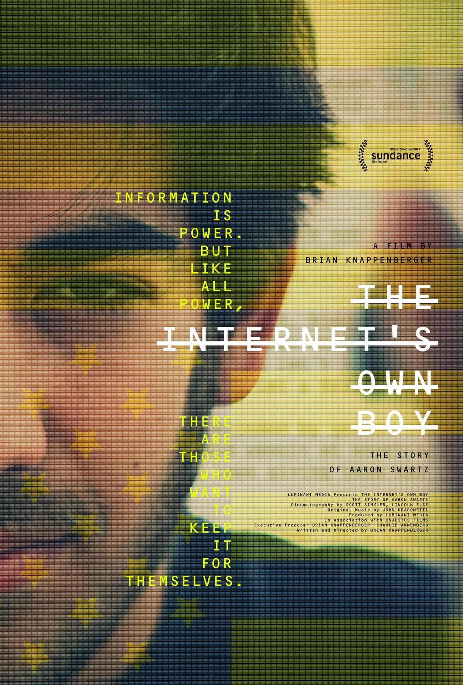
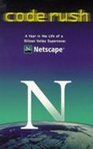
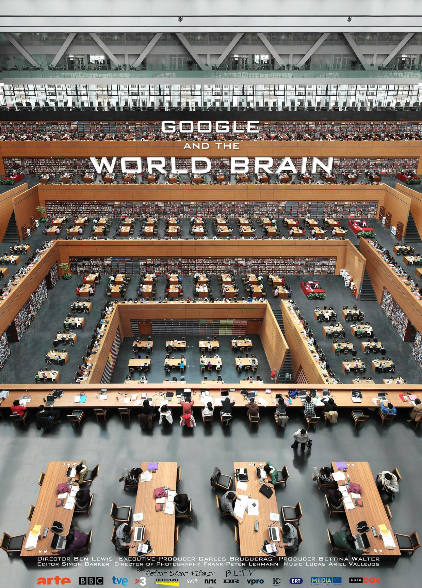

From the films introduced in this article, you can see all kinds of programmers: some are brilliant, creating the RSS 1.0 specification at the age of 14, with footprints all over the Internet, but dying young; some live in their own world and stick to their ideals, their ideas not decided by others; some do their best to save the company, and the spirit of never giving up is vividly reflected in the films; some risk their lives to reveal little-known truths...
1. The Internet's Own Boy: The Story of Aaron Swartz

Film introduction:
Swartz participated in the formulation of network standards very early on, and at the age of 14, he participated in the creation of the RSS 1.0 specification. From then on, he became a member of the W3C RDF core working group, co-designed the typesetting language Markdown with John Gruber (the editor used by Jianshu includes Markdown), and participated in many other projects. In 2006, Swartz founded the web ok ever published"). Swartz developed the 'theinfo' encyclopedia project using wiki technology as early as 2000. His company's backend was also built with a wiki. Swartz studied at Stanford University, but soon dropped out to create the software company Infogami. Aaron Swartz was also one of the three founders of the social news website Reddit. In early 2006, Infogami merged with Reddit, and at the end of 2006 it was sold to the publishing company Condé Nast. Swartz sold his shares before his 20th birthday. In 2006, Swartz used wiki technology to found the online free library Open Library, with the aim of giving every ever-published book its own web page ("one web page for every book ever published"). In 2010, Swartz founded Demand Progress, which opposed Internet censorship. This organization mobilized people through email and other media to express opinions and exert pressure on members of Congress and other opinion leaders on specific issues. On July 19, 2011, Swartz was arrested for digital theft, charged with downloading 4.8 million academic papers from MIT and JSTOR. He was released after paying a $100,000 bail. Swartz used an external hard drive and physically accessed the MIT internal network to run scripts to download JSTOR papers. He committed suicide in January 2013.
Wonderful reviews:
Not long after seeing the beginning, they said that he was a person at odds with the world, and the world was at odds with him too. I immediately thought of myself, and had already guessed he might suffer from depression. For anyone so talented and uncooperative with tradition either becomes a legend or a victim. Of course, few enjoy only one of the two; more often, people have both or abandon both, like Swartz.
2. Indie Game: The Movie

Film introduction:
Indie Game: The Movie is a documentary about independent games, telling the wonderful stories of independent games in the past. With the arrival of the twenty-first century, a new type of independent artist was born: the independent game developer. They have independent concepts, special designs, and games with distinct personalities. Of course, they also hope to succeed. In the film, designer Edmund McMillen and programmer Tommy Refenes, after two years of hard work, await the release of their first XBOX game, Super Meat Boy. The game tells the story of a bandage boy looking for his girlfriend. At a video game expo called PAX, developer Phil Fish unveiled the long-awaited game FEZ, which took four years to create. Jonathan Blow, meanwhile, was considering his next game after Braid. Braid was once one of the highest-rated games in history. Lisanne Pajot and James Swirsky made this film together for the first time, carefully capturing the bits and pieces of independent game artists' struggles and the emotional journey of their artistic expression. Four developers, three games, one ultimate goal — all expressed together through this documentary.
Wonderful reviews:
There are some people who also want to make money, but they work more out of idealism. Our society calls them idealists. They hope their works will be recognized, accepted, and liked by others, but it doesn't matter if they aren't. They will create according to their own beliefs and will not change one bit because of it. They detach from society, live in seclusion, and immerse themselves wholeheartedly in the world they have created.
3. Code Rush

Film introduction:
This is a documentary about the story of Netscape and Mozilla. Netscape was a great company; it invented the img tag, cookies, the SSL security protocol, and of course the star language of today's HTML5 era, JavaScript! But for well-known reasons, it failed. Netscape eventually open-sourced the browser code, and this new project was Mozilla! The production team spanned several important time points and followed the programmers for an entire year before finally making this documentary.
Independent filmmakers followed the Mozilla team from March 1998 to April 1999. They had once developed the source code of the Netscape browser and taken it to the world, and now they were making a final effort to save the company. The result was a remarkable moment in computer history. The filming captured the work of the first beta testers; at this moment, Jamie Zawinski wrote and uploaded the first build made public, and the acquisition by AOL was announced through a collective meeting. It was broadcast nationally on PBS in March 2000, and it also marked the beginning of the dot-com bubble burst.
Wonderful reviews:
With the rise of Internet companies such as Baidu and Tencent, more and more people are devoting themselves to this mysterious industry. Here there are myths of getting rich overnight; the people here are young and trendy; the people here are doing the coolest things in the world. This is Internet entrepreneurship.
Silicon Valley is undoubtedly the leader in this field. Companies such as Google and Facebook, together with Stanford University, have made this place the world's highest point of computer and Internet technology. People are amazed, envious, and even jealous of these dreamlike lives and stories, so they found a not-so-new documentary: Code Rush. (There are very few IT documentaries; perhaps the industry is too young, and thus forgot to take anniversary photos.)
The few who actually click on this movie and spend an hour watching it will all feel lost at the ending — not for the people on screen, but for themselves. Because they themselves are among them. At the moment the camera turns on, Netscape and its employees are trying to avoid being defeated and never recovering after being beaten by Microsoft. (For the browser war between Netscape and Microsoft, please search Baidu.) Next, the camera follows the perspective of each programmer, telling how this industry — the most glamorous and attractive in the world — operates: overweight fat guys; kids who don't do homework but write code; maniacs who eat and live in front of computers... All kinds of effort, hard work, collaboration, and the spirit of never giving up are vividly reflected in just a few dozen minutes. "We have not been defeated; we are doing things that change the world. History will bear witness."
But the end of the film turns to Wall Street, pointing out the root of everything: all their (the programmers') dreams of getting rich are there with us. And Wall Street's greed and ruthlessness are well known. Because of the pessimistic outlook on Netscape's prospects of defeating Microsoft (background: at the time, entrepreneurs seeking investment were always asked, "Would Microsoft be interested?"), everyone's efforts, and the establishment of the Mozilla open-source community ultimately could not reverse the fact that the company's capital chain broke and it had to be sold to AOL. When everyone truly put down their work and looked back at themselves, they realized they had become used to days away from home, hadn't seen their children for a long time, and were separated from their wives or even divorced. Their health was gone, and their hearts were weary. Former companions each went their own way. After all the glory faded, they were actually the most ordinary people.
Compared with all the propaganda the media gives everyone, this documentary tells more about the cruelty of the IT industry. There are gains and losses. Perhaps someone as glamorous as Mark Zuckerberg lacks much of the ordinary person's happiness in reality. Men become excellent because of loneliness. Facing a computer screen all night is one way, but not the only one.
The programmers referred to here are not the same as today's "typists" who write code.
4. The Secret Rules of Modern Living: Algorithms

Film introduction (I won't translate it):
Without us noticing, modern life has been taken over. Algorithms run everything from search engines on the internet, to sat navs and credit card data security - they even help us travel the world, find love and save lives.
Mathematician Professor Marcus du Sautoy demystifies the hidden world of algorithms. By showing us some of the algorithms most essential to our lives, he reveals where these 2,000-year-old problem solvers came from - how they work, what they have achieved and how they are now so advanced they can even programme themselves.
Wonderful reviews:
Algorithms have long been ubiquitous in our lives, from sorting, search engines, airplane takeoff sequences, route selection, games, large automated warehouses... The final section is machine learning, where machines discover algorithms themselves.
5. Timewatch - Code-Breakers: Bletchley Park's Lost Heroes

About the film:
Did you know about Bletchley Park, the British code-breaking center during World War II? Located 50 miles north of London, Bletchley Park never appeared on any map due to the highest military secrecy. Bletchley Park remained silent, but it changed the entire world.
The documentary [Code-Breakers: Bletchley Park's Lost Heroes] tells how, during World War II, Britain set up a listening station at Bletchley Park to crack Nazi Germany's top-level "Tunny" cipher. Thanks to a small German oversight, British code-breakers successfully cracked the code. Intelligence officers intercepted secret communications between Nazi leader Adolf Hitler and several of his senior generals, making the Battle of Kursk the turning point of World War II, with the Soviet army advancing all the way to Berlin. The heroes of Bletchley Park shortened the war by at least two years, saved countless lives from devastation, and achieved a great victory.
The film introduces the great achievements of three geniuses at the estate. Alan Turing cracked Germany's Enigma code. On March 25, 2014, Captain Raymond Roberts, the last member of that code-breaking team at Bletchley Park and a landmark figure in the world of WWII code-breaking, passed away at the age of 93. Nor was the first computer in history created by Americans. The two great men who made outstanding contributions to the development of computing worldwide, Bill Tutte and Tommy Flowers, only began to give the world the truth after their work was declassified in the 1970s and 1980s. Of these, Bill Tutte later immigrated to Canada and worked at the University of Waterloo his whole career — which is also one reason why the computer science program at the University of Waterloo is world-renowned.
Featured reviews:
The German army's code operators were lazy and negligent, leading to a series of defeats. Truly, one careless move and you lose the entire game.
A group of geniuses seized on a small oversight and thereby changed the course of events. Opportunity always rewards only those who are prepared and have rock-solid professional expertise.
Hire people solely on merit; all are equal. Putting the right people in the right positions is the right way. Those who push theories of bloodline or class origin will ultimately be proved by history to be utterly foolish.
6. Google and the World Brain

About the film:
It is said that humanity has never abandoned the dream of the Tower of Babel. In the 1930s, the famous science fiction writer Wells' "World Brain" prophecy was, 70 years later, realized in a different form by the intelligent pioneer Google. A plan to scan and store every book in the world — an unprecedented knowledge-base project — has actually been racing ahead without most of us knowing. For 12 years, millions of collected books have had their copyrights infringed, and the image of a superintelligence vaguely looming behind the plan has inspired both awe and fear, endless suspicion and anger. A landmark lawsuit over the meaning of knowledge and the future of human culture cuts through the dilemma of civilization's dream like a sharp blade. The everyday phrase "let me Google it" has since become intricate and weighty.
Featured reviews:
In 1938, science fiction writer Herbert George Wells (author of works such as The War of the Worlds) published the book World Brain. In this book, he focused on the concept of the World Brain, which concerns building a world-scale knowledge base. The World Brain gathers the knowledge of all humanity so that anyone can consult it whenever needed.
Today, the Google Books project matches Wells' World Brain vision. This project aims to digitize all the world's books for user searches.
Just as Google's plan was beginning to take shape, authors began to fight back over copyright issues. As a result, Google had no choice but to scale back the project, only including books in the public domain.
However, in the eyes of some in the tech world, copyright is not their biggest concern. In Google's early days, KK, the author of Out of Control, once asked the company's founders a question: since the internet already had relatively good search engines at the time, why did Google need to launch this business? The Google founders replied that they were working on artificial intelligence.
In hindsight, what Google is doing is precisely artificial intelligence on a global scale. Relying on its massive server clusters (computing power), advanced software (algorithms), and the vast amounts of data from the internet (which are also massive amounts of information and knowledge), it has elevated AI to unprecedented heights.
7. Downloaded

About the film:
This documentary chronicles the rise and fall of Napster, the pioneering P2P file-sharing and music-sharing website. Director Alex Winter uses it to explore the enormous impact of internet technology on the music industry. Although the entire site came to an end amid copyright litigation disputes with record companies, the emerging holy war for internet freedom was only just beginning to stir up a wave of the era.
Featured reviews:
This is a documentary about Napster. How badass was this software? The P2P technology you use today all has its prototype in it. Even the early iTunes interface looked so much like it. Through the rise and fall of this software, it reflects the impact of internet sharing culture on traditional industries, especially the recording industry. And this was also the first time in the history of the recording industry that technology did not help the industry make money, but instead instilled fear in it.
8. Citizenfour

About the film:
Citizenfour faithfully recreates the whole story of the "Prism" scandal, revealing to audiences the truth about Edward Snowden, the man at the center of the storm.
The documentary's director, Laura Poitras, was herself a core figure in the "Prism" scandal. It was with the help of her and Guardian journalist Glenn Greenwald that Snowden was able to expose the surveillance scandal of the U.S. National Security Agency to the public. Poitras and Greenwald were consequently awarded the Pulitzer Prize. The title "Citizenfour" was exactly the anonymous code name Snowden used in his early email communications with Poitras. In June 2013, when Poitras first flew to Hong Kong to meet Snowden, the camera she carried with her captured the scene for real. Citizenfour faithfully recreates the entire course of the "Prism" scandal, showing audiences the true Edward Snowden at the center of the vortex.
It turns out that before his identity was made public, Snowden had been in anonymous contact with the film's director Laura Poitras and reporters at the Guardian. So in the film, from the first email, to the first news story, to going public with his identity, he actually made a momentous decision for the sake of more voices. No one knew what would happen tomorrow or even the next hour, yet the film handles such weighty material lightly, seemingly just showing a few days of his daily life. So brave.
Featured reviews:
It turns out that before his identity was made public, Snowden had been in anonymous contact with the film's director Laura Poitras and reporters at the Guardian. So in the film, from the first email, to the first news story, to going public with his identity, he actually made a momentous decision for the sake of more voices. No one knew what would happen tomorrow or even the next hour, yet the film handles such weighty material lightly, seemingly just showing a few days of his daily life. So brave.
9. We Steal Secrets: The Story of WikiLeaks

About the film:
The documentary fascinatingly depicts, from multiple levels, the transparency of the information age and our unrelenting quest for truth. The film details the birth of Julian Assange's WikiLeaks website, which enabled the biggest security breach in U.S. history. The film chronicles the rise and fall of this mysterious website, interwoven with the leak by U.S. Army soldier Bradley Manning — a disturbing, highly intelligent soldier who downloaded hundreds of thousands of documents from U.S. military and diplomatic servers.
Featured reviews:
Best documentary screenplay of 2013. It offers multi-faceted accounts and lets the viewer decide for themselves. Assange's multifacetedness and complexity as an idealistic hacker is an interesting presentation of human nature on a special, novel vehicle.
10. TPB AFK: The Pirate Bay Away from Keyboard

About the film:
At the beginning of the 21st century, a website advocating "true freedom of speech and cultural dissemination" burst onto the scene. It would become the famous, endlessly controversial largest file-sharing website: The Pirate Bay. The site was founded by three Swedes: Gottfrid Svartholm Warg, Fredrik Neij, and Peter Sunde. Their spirit and boldness received enthusiastic support from the replication faction (Pirate Party) worldwide, while also incurring the resentment of copyright holders claiming losses as high as $6.1 billion. In 2008, the industry giants led by Hollywood filed a lawsuit against The Pirate Bay, and the three founders had no choice but to "go away from keyboard" to engage in a series of battles with the prosecution.
One side uses the law as its means, the other uses technology as its weapon. This is not merely a war between different value camps.
Featured reviews:
I've always thought The Pirate Bay is a miracle — even under such heavy pressure from the U.S. and the Swedish government, it still stands firm and can still be accessed and downloaded from to this day.
The film, in documentary form, tells the story of how the three Pirate Bay founders were prosecuted from start to finish. Although the film's viewpoint is basically on the side of the defendants, you can still see the impact of copyright disputes in modern society.
The title AFK is a geek term, and the film also gives viewers a glimpse into real-world geek life. The ending, with everyone going to prison, is lamentable.
From: Jianshu
Author: Jaky_Zhan
Link: http://www.jianshu.com/p/2dd54ec0bb43